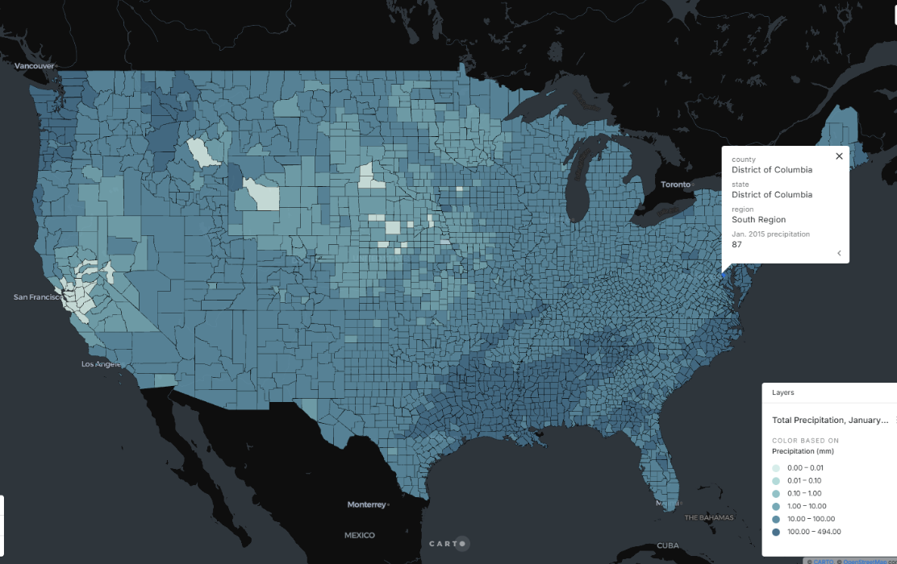

Maps
The maps below are ones that I have created for various academic projects at JMU and to enhance my personal interests, such as hiking.

Yosemite Map
This map highlights the roads and entrance points of Yosemite National Park. I created it to make navigation to the park easier for visitors, especially since my sister and I were planning a visit and found the official NPS map difficult to use. It shows which roads provide access and marks areas that are not suitable for camping.

NYC Arrests Story Map
View the full interactive story map here →
This story map explores arrest patterns across New York City, highlighting key trends and neighborhoods.

USA Precipitation Map
I analyzed precipitation data from January 2015 in Excel, using formulas and statistics to explore trends and variability with standard deviation. I then created this map on carto.com to visualize the data across the United States, highlighting areas of high and low precipitation and allowing for comparison with the trends I identified.

James Madison University East Campus Map
I created this map to practice digitizing buildings and pathways on a campus map using ArcGIS Pro. I carefully traced each building with the polygon tool to accurately represent their shapes and locations, and mapped the pathways to reflect the actual campus layout.